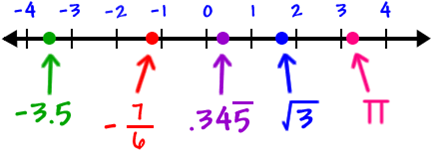
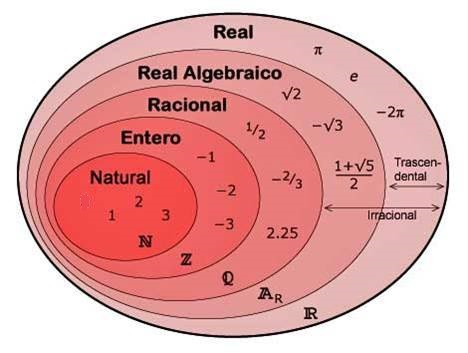

Números reales
Números reales
Hay números que no podemos expresar como fracción como: π = 3,1415.., e = 2,7182.. , √2 = 1,4142.., número de oro= Ψ =(1+√5)/2 = 1,61803..
Estos números se llaman irracionales, y junto con los números racionales forman los números reales, R , que representamos en una recta llamada la recta real:

Para representar algunos de estos números irracionales usamos el Teorema de Pitágoras

Ahora tenemos estos conjuntos de números:

Ejercicios:
1.- Clasifica estos números:
a) 121/11
b) 1.234567....
c) -√225
d) -1/7
Soluciones: a) N; b) R; c) Z; d) Q
2.- Representa estos números en la recta real: √29, √41
3.-
Decide si son verdaderas o falsas las siguientes afirmaciones:
Retroalimentación
Verdadero
Retroalimentación
Falso
Retroalimentación
Falso
Retroalimentación
Falso
Son racionales sólo los números decimales periódicos y exactos. Los números decimales no periódicos son irracionales.
Obra publicada con Licencia Creative Commons Reconocimiento No comercial Compartir igual 3.0